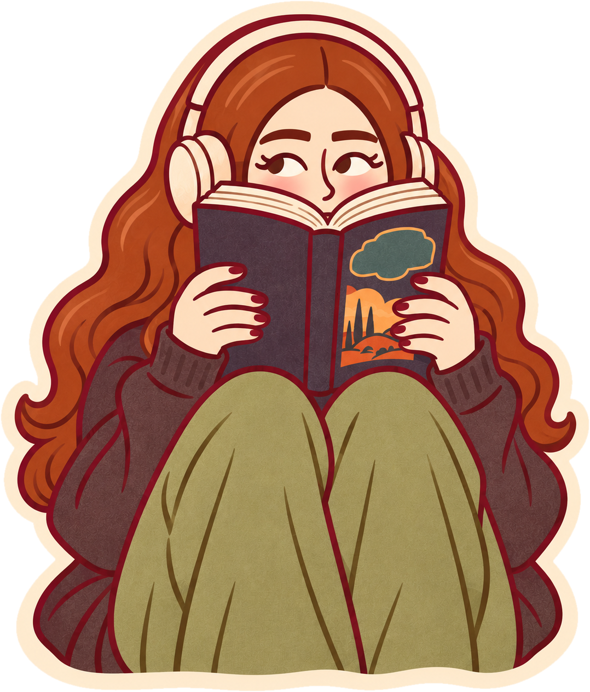
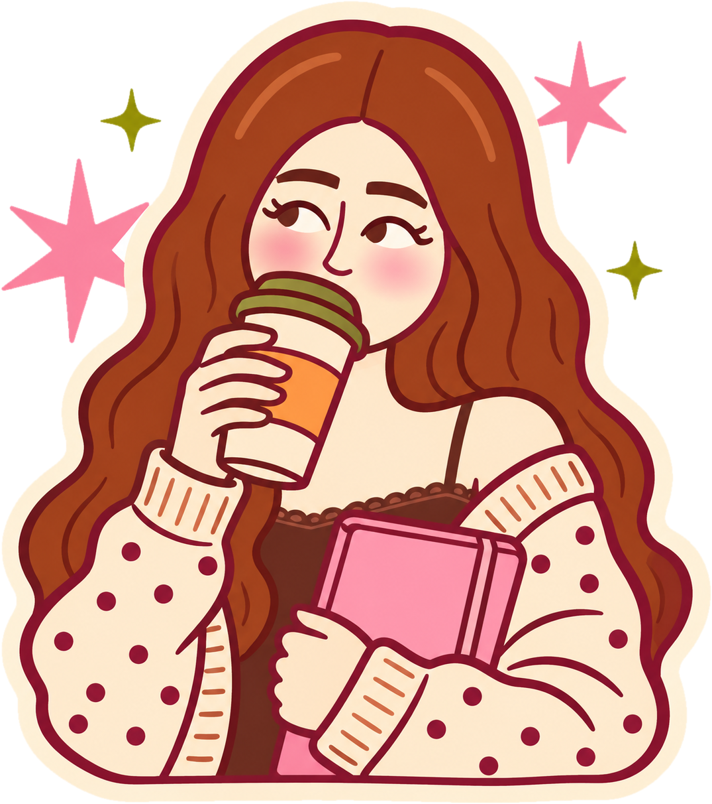

Se premiará a creadores literarios, librerías, editoriales independientes y novela gráfica.
La ceremonia será el 3 de diciembre.
Ahorran, viajan y se organizan con amigos para conocer a sus autores favoritos.
Y BookTok y BookTube mantienen viva la conversación todo el año.

Autores invitados, firmas y presentaciones: cada anuncio es un motivo para guardar la fecha.
Book hauls, reseñas y recorridos por la feria inspiran a otros a querer vivir la experiencia.
Stands, portadas, ediciones especiales y activaciones deciden qué libro descubres.
Literatura, arte, cine, música y gastronomía: la feria convierte una cultura en experiencia.
Una marca reconocida, una comunidad que la espera y experiencias que invitan a regresar.